Fancam Assembly - SNL: Season 48 Episode 12
In this Saturday Night Live sketch, a teacher (Pedro Pascal) can't figure out why his students are obsessed with making fancams of him and the rest of the school staff.
🎬 Watch "Fancam Assembly" from SNL 🎬
Hi! My name is Kendall Bowden and I'm a NYC based actress and comedian. I recently graduated from NYU Tisch School of the Arts where I earned a BFA in Drama on a talent-based scholarship. At Tisch, I studied both at Stella Adler Studio of Acting and Stonestreet Studios.
I'm passionate about Comedy as I believe nothing brings people together more than laughter! I've trained at both Upright Citizens Brigade and Second City. I'm a regularly featured extra on Saturday Night Live so you may have seen my mom's recent Facebook post with a blurry picture of me standing behind Keenan Thompson.
During the day, I work at a diaper company (not a joke), my biggest accomplishment was playing in a band with Taylor Swift (not a joke) but if you like jokes, check out my sketch group Fun in Moderation! I'm a head writer/producer/performer. Our shows feature all-new original sketches at Asylum NYC and it would be great to see you at a show!
In this Saturday Night Live sketch, a teacher (Pedro Pascal) can't figure out why his students are obsessed with making fancams of him and the rest of the school staff.
🎬 Watch "Fancam Assembly" from SNL 🎬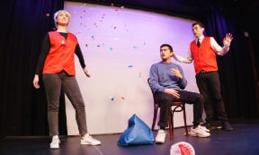
Fun in Moderation is a brand new sketch group features Kendall Bowden, Austin Elias-de Jesus, and Nick Ryan. Laughs will be had, love may be found, and if you're lucky, you might even get a little kiss on the cheek.
🎟 Get tickets 🎟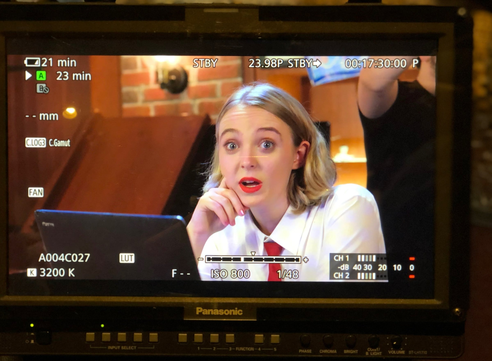
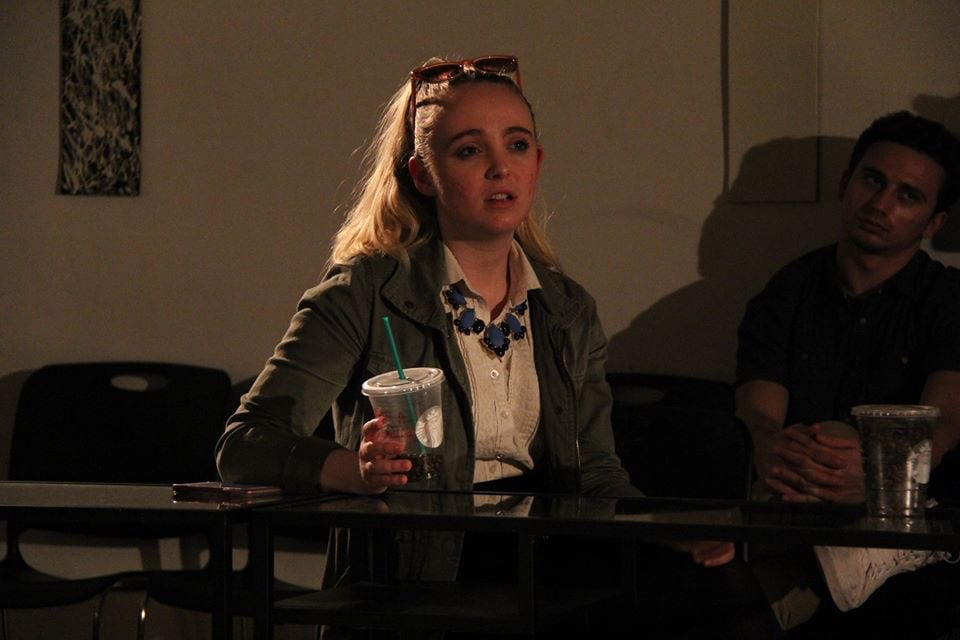
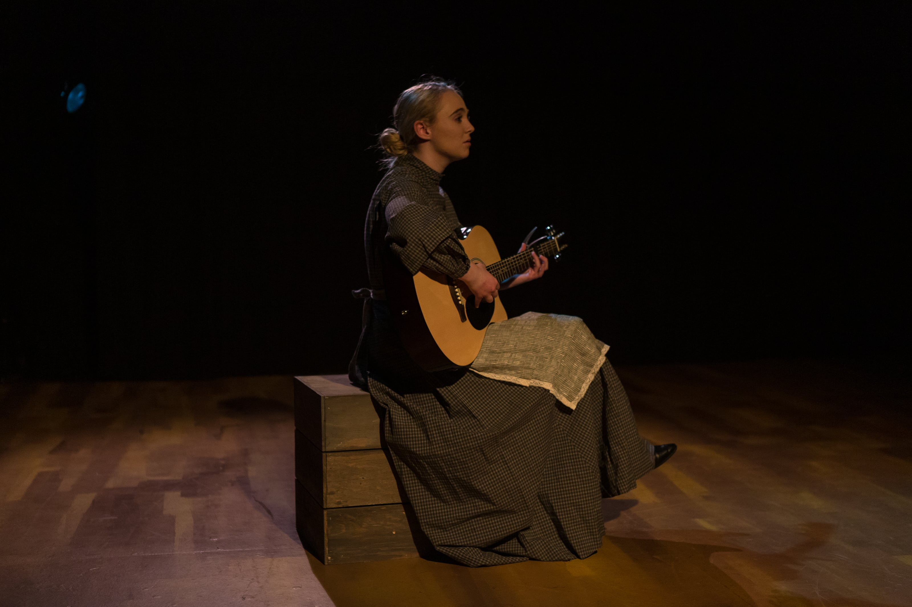
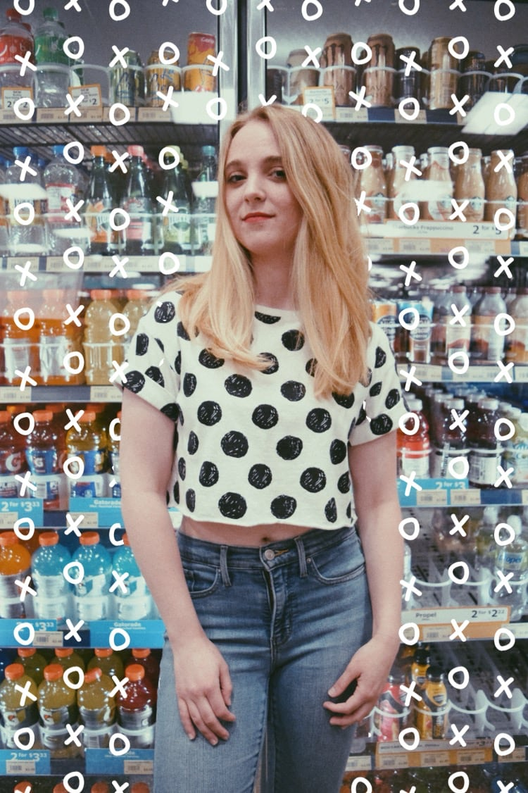
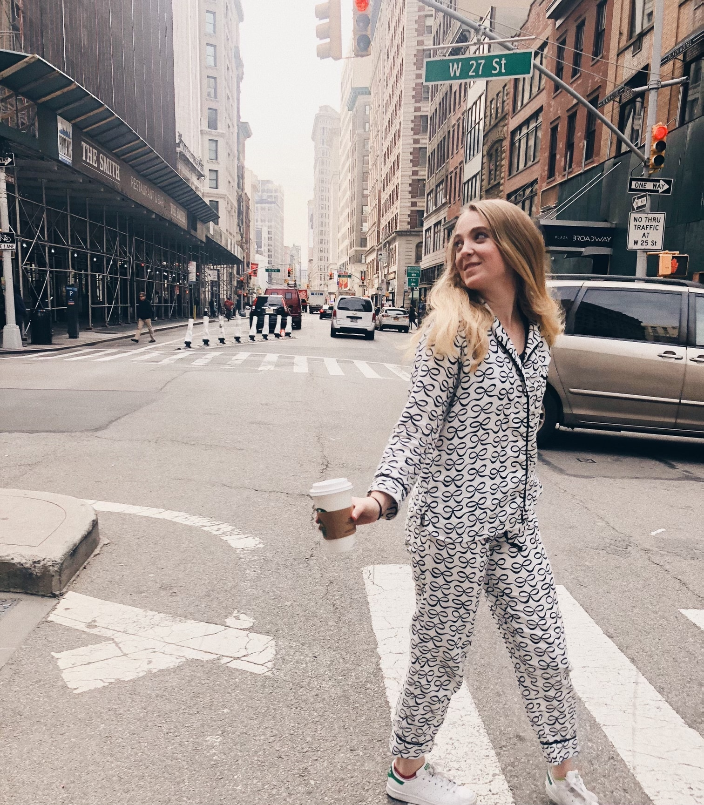
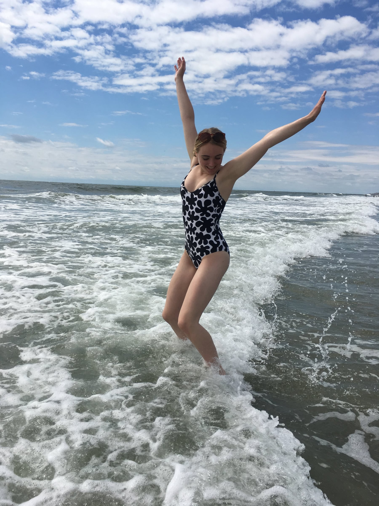
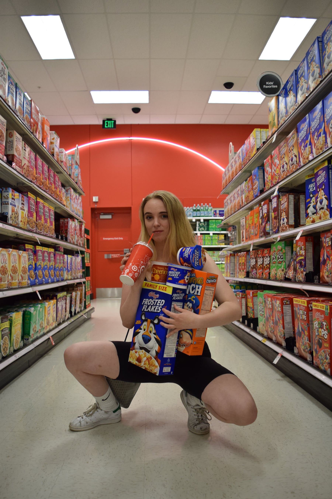
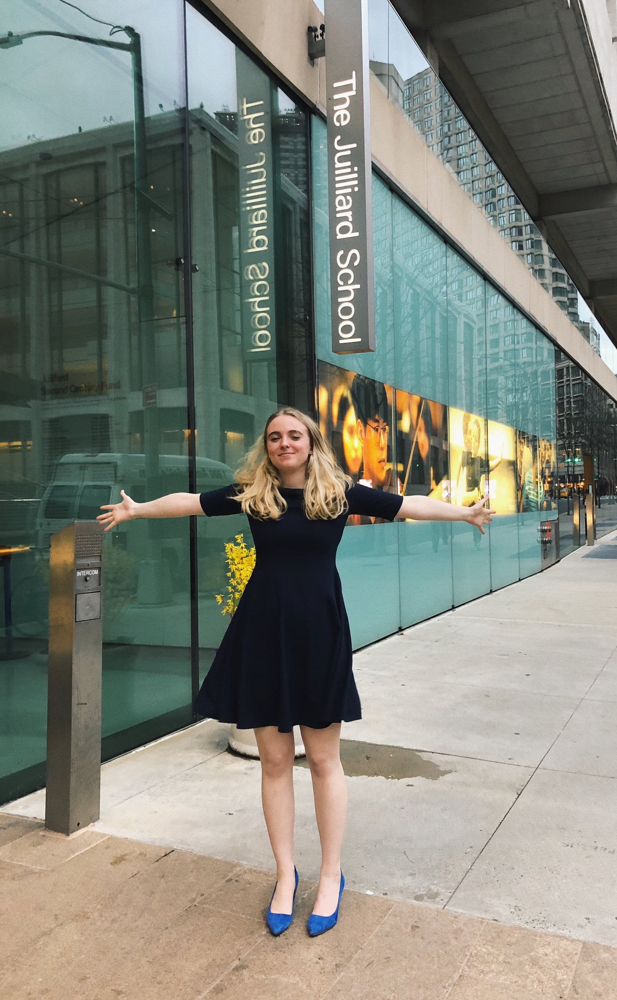
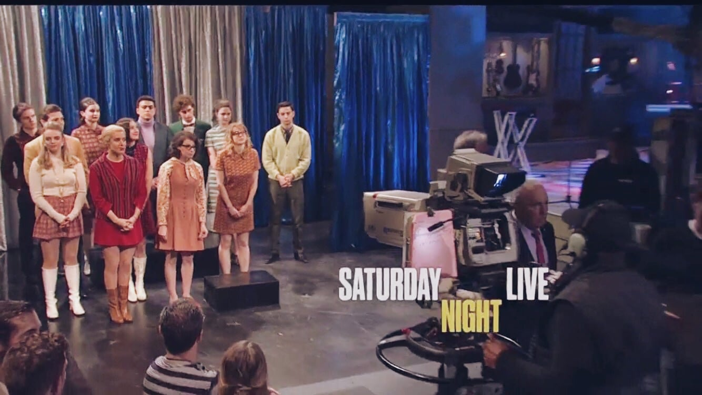
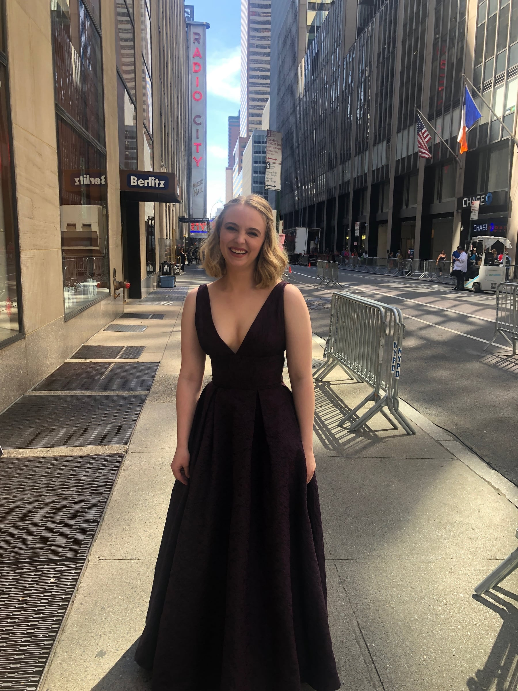
Sketch Comedy Team Fun In Moderation to Play Caveat This Month
March 3, 2024 Fun in Moderation will take the stage Friday, March 15th at 7 pm at Caveat (21A Clinton Street, Manhattan, 10002).
Read more: Broadway World
A sketch about hearing your own voice
January 19, 2024 Fun in Moderation's "Audiobook" sketch was featured in New Yorker Magazine's "Goings On" section
Read more: New Yorker Magazine
Fun in Moderation at Asylum NYC
October 6, 2022 Kendall Bowden and the Fun-in-Moderation crew return to Asylum NYC to continue their sketch series.
Read more: Broadway World
Fun in Moderation at Asylum NYC
June 24, 2022 Kendall Bowden is co-creator of Fun-in-Moderation "Fun in Moderation famously enjoys a good time. This brand new sketch group features Kendall Bowden, Austin Elias-de Jesus, Noah Friend, and Nick Ryan. Laughs will be had, love may be found, and if youre lucky, you might even get a little kiss on the cheek."
Read more: Broadway World
NYU Tisch: 2021 Tisch Drama Showcase
June 28, 2021 Kendall Bowden is one of the featured actors on the 2021 Drama Showcase "Tisch Drama provides this as a complimentary service to professionals in the field" to "meet the class of 2020." NYU is openly seeking casting calls and audition opportunities for recent graduates of the Drama program through its submission form or by email.
2021 Tisch Drama Showcase
Little & Fierce Theatre Company Presents CREATE: A Digital Reading Series
December 1, 2020 "Little & Fierce Theatre Company will present five new plays as part of CREATE: A Digital Reading Series! From December 3rd to December 6th, including 'I'm Happy For You', written and directed by Andres Garza, featuring Danielle Edmonds, Stephanie Cha, Danielle Covington, Thomas Shuman, Kiana Lum, Sarah Bitar, Clarinda D'Cruze, Jacqueline Savageau, Kendall Bowden, and Daphne Smith."
Read more: Broadway World
Students ready for 'Mary Poppins' performance
January 19, 2016 "Seniors Ty Botts and Kendal Bowden, along with elementary students Sydney Kuszyk and Joey Casey, will be portraying the Banks family in the BASH production of 'Mary Poppins'."
Read more: Reading Eagle
'The Fisherman And His Wife' comes to Steel River Playhouse
September 24, 2014 "Directed by Jay Gilman, this show has been adapted by the cast and creative team, including Kendall Bowden, Jay Gilman, Peter McKenney, Anna Pederson, Trent Soto, and Katie Stahl."
Read more: Pottstown Mercury
'Music Man' In Its Final Week At Steel River Playhouse
June 19, 2014 "A winner of 5 Tony Awards including best musical, The Music Man is a modern classic that includes all-time favorite tunes "Ya Got Trouble," "Shipoopi," "Goodnight Ladies," "Gary, Indiana," and the show-stopping "Seventy-Six Trombones."
Read more: Pottstown Post
Broadway Classic Comes to Life at Steel River Playhouse: THE MUSIC MAN
June 14, 2014 "This is a very tight production. The acting is stellar, music is tuneful and delicious to hear, and the choreography is precise and perfect for the production."
Read more: Stage Magazine
Steel River brings 'The Music Man' to Pottstown
June 5, 2014 "When lovable, smooth-talking Harold Hill comes marching into town, you know there's going to be trouble right here in River City."
Read more: Pottstown Mercury
'Pinocchio' production available for area schools
January 30, 2014 "It's a little too late to see Steel River Playhouse's fun-for-the-whole-family recent production of 'Pinocchio,' but Steel River will take the show on the road to some area schools." Kendall Bowden took over the role of Fox for the run of the show in March, replacing Becka Malanios.
Read more: Pottstown Mercury
Boyertown Area Senior High Music Department presents Jekyll and Hyde
March 28, 2014 "Based on Robert Louis Stevenson's Victorian era novel 'The Strange Case of Dr Jekyll and Mr Hyde', 'Jekyll & Hyde' examines the inner conflict that exists between the forces of good and evil, civility and savagery, which reside within us all."
Read more: Berks Mont News
Steel River Gives Families a Reason to Cheer With SHREK THE MUSICAL
December 14, 2013 "The cast is huge and very skilled. I was impressed with the depth of talent as I watched the show. From the principals to chorus, every featured line had a gorgeous voice to offer. The choreography was terrific, every movement precise and together. Also, I was impressed with the level of concentration in the cast, even the youngest members. At no point could I see anyone losing focus. Visually, this is a holiday feast!"
Read more: Stage Magazine
Steel River's 'Shrek the Musical' is high-energy, enchanting entertainment
December 19, 2013 "Steel River Playhouse's current show is a really big production with a really big leading man - or should I say - ogre. 'Shrek the Musical' opened last weekend to the delight of a multigenerational audience."
Read more: Montgomery News
'Shrek the Musical' opens next week at Steel River Playhouse
November 26, 2013 "The cast of 'Shrek the Musical' includes... Kendall Bowden."
Read more: Pottstown Mercury
'Shrek the Musical' at Steel River Playhouse for 5th anniversary celebration
November 22, 2013 "The cast of Shrek the Musical includes... Kendall Bowden."
Read more: BerksMont News
Steel River Playhouse presents 'Fame, Jr.' this weekend in Pottstown
August 8, 2013 "The popular musical is a high-energy production with strong singing and dancing from a talented ensemble cast."
Read more: Pottstown Mercury
Steel River's 'Annie' will cheer up even the grumpiest Grinch
December 10, 2012 "...orphans are Rachael McVey as Molly, Kennedy Kollar as Kate, Kyraen Bittner as Tessie, Molly Hofstaedter as Duffy, Kendall Bowden as Pepper, and Olivia Swenson as July. Not to be totally upstaged by the young actors, the grown-ups in this show turn in some dynamite performances."
Read more: CurtainCall Pottstown Mercury Blog
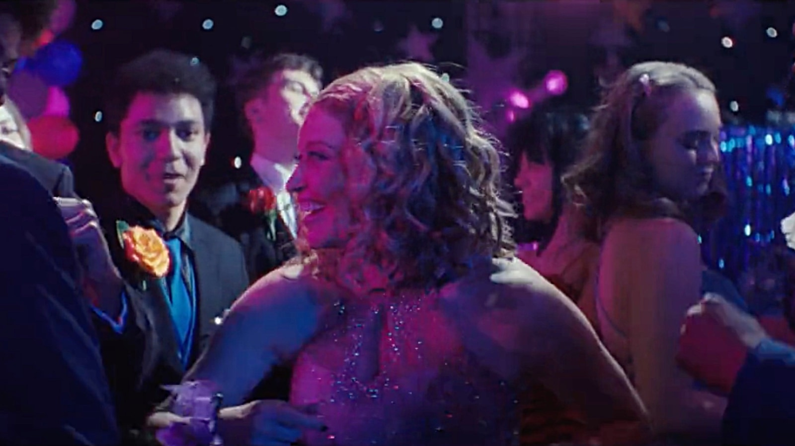
Saturday Night Live's Andrew Dismutes wishes all his classmates to Have a Great Summer! as he imagines what comes "After High School" in this fun sketch about Prom.
🎬 Watch "After High School" from SNL 🎬